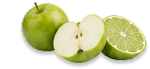
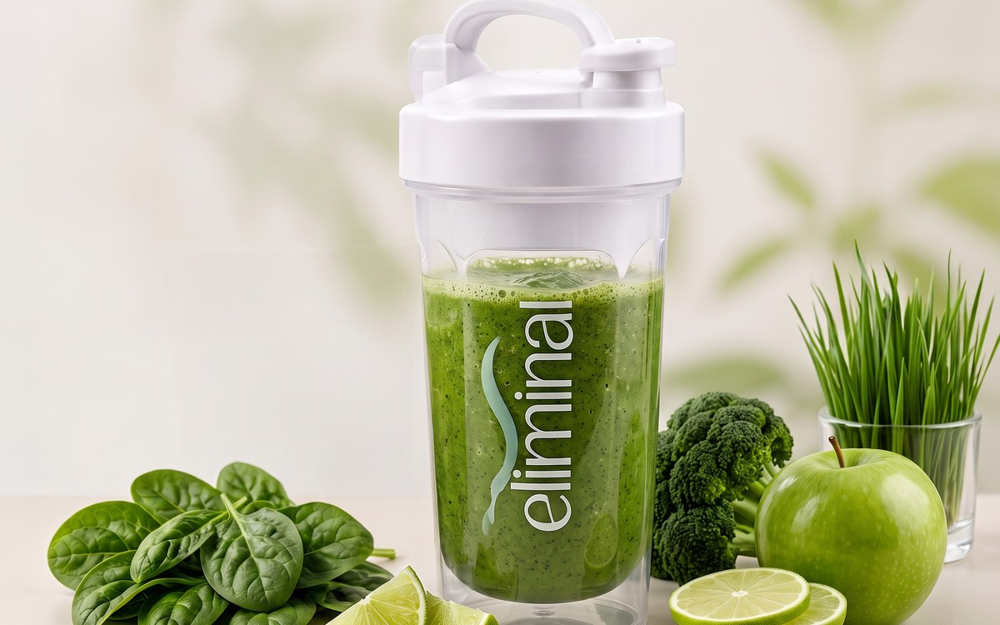
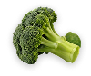

Почніть зі зрозумілої порції та улюбленого способу приготування.

Вітаємо з новим доповненням вашого раціону. Verde поєднує рослинні інгредієнти та пребіотичну клітковину зі свіжим смаком яблука й лайма. Залишилося обрати спосіб приготування, який вам подобається.
Як приготувати Verde

Три дії — і готово
1
Налийте у шейкер 200–300 мл води або іншого напою.
2
Додайте дві мірні ложки Verde (10 г).
3
Добре перемішайте.
Можна використовувати сік чи смузі. Більше не потрібно: одна порція на день.
Рослинна основа + пребіотична клітковина
порція 10 г

4,5 г
зелена основа
2 г
овочева основа
2,5 г
пребіотична клітковина
У порції 10 г: 4,5 г зеленої основи, 2 г овочевої основи та 2,5 г пребіотичної клітковини (акація та інулін). Verde доповнює різноманітне харчування, але не замінює овочів або повноцінного прийому їжі.
З турботою, Команда Eliminal
Дієтична добавка. Не є лікарським засобом. Перед застосуванням рекомендована консультація лікаря.